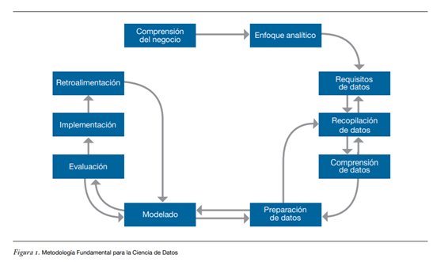

Ciencia de Datos CD y PC
Etapas
Desglosando el proceso
Desde sus inicios, la Ciencia de Datos ha demandado una metodología sólida para formalizar sus procesos y establecer estándares de buenas prácticas. Esta metodología, esencial para guiar a los científicos de datos a través del complejo laberinto de análisis de datos, se compone de una serie de etapas interconectadas que aseguran la efectividad y validez de los resultados obtenidos.
Estas etapas, aunque presentadas de manera secuencial, suelen ser iterativas y adaptativas, lo que significa que los científicos de datos pueden retroceder y avanzar entre ellas según sea necesario para abordar los desafíos y las oportunidades que surjan durante el proceso de análisis de datos.

1. Comprensión del marco de actuación del negocio
En esta fase inicial, se establecen las bases del análisis al comprender en profundidad el contexto del negocio, institución o programa en cuestión. Esto implica identificar los objetivos, las necesidades y los desafíos específicos que se deben abordar para resolver el problema planteado.
2. Enfoque analítico
El enfoque analítico se centra en seleccionar y aplicar las técnicas estadísticas adecuadas para alcanzar los objetivos del proyecto. Aquí se determina el marco metodológico que guiará la exploración y el análisis de los datos.
3. Requisitos de datos
El enfoque analítico conduce a la definición de los requisitos de datos necesarios para llevar a cabo el análisis. Esto implica especificar qué tipos de datos se recogerán, qué respuestas se esperan obtener y cómo se estructurarán los datos para su posterior análisis.
4. Recopilación de datos
En esta etapa, se recopilan los datos necesarios para el proyecto a partir de diversas fuentes, como bases de datos, archivos y sistemas de información relevantes. Es crucial garantizar la calidad y la integridad de los datos recopilados para asegurar la fiabilidad de los resultados.
5. Comprensión de datos
Una vez que se disponen de los datos, se procede a explorar y comprender su estructura y contenido mediante técnicas de estadística descriptiva y visualización de datos. Esto permite identificar patrones, tendencias y posibles problemas de calidad de los datos que deben abordarse en la etapa de preparación.
6. Preparación de datos
La preparación de datos es una etapa crítica en la que se lleva a cabo la limpieza, transformación y manipulación de los datos para que sean aptos para el análisis. Esto incluye la corrección de errores, la eliminación de duplicados y la normalización de variables, entre otras tareas.
7. Modelado
Con los datos preparados, se procede a la construcción y entrenamiento de modelos analíticos utilizando técnicas de aprendizaje automático y estadística. El objetivo es desarrollar modelos predictivos y descriptivos que puedan extraer patrones y generar conocimiento a partir de los datos.
8. Evaluación
En esta etapa, se evalúa la validez y el rendimiento de los modelos desarrollados utilizando métricas y técnicas específicas. Esto garantiza que los modelos sean precisos y útiles para abordar el problema planteado y se ajusten adecuadamente a los datos disponibles.
9. Implementación
Una vez que se ha validado el modelo, se procede a su implementación en el entorno operativo correspondiente. Esto puede implicar la integración del modelo en sistemas existentes o la creación de nuevas herramientas y aplicaciones para su uso práctico.
10. Retroalimentación
La etapa final del proceso de Ciencia de Datos implica la retroalimentación continua, donde se utilizan los resultados implementados para ajustar y mejorar el modelo en función de la realidad y las necesidades cambiantes del negocio o programa. Esto asegura que el modelo siga siendo relevante y efectivo a lo largo del tiempo.
Obra publicada con Licencia Creative Commons Reconocimiento Compartir igual 4.0